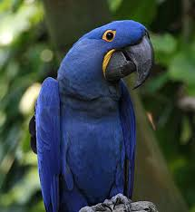

El guacamayo jacinto (Anodorhynchus hyacinthinus) es
una especie de ave psitaciforme de la familia de los
loros (Psittacidae). Habita en las selvas de buena parte de Brasil,
Bolivia y el norte de Paraguay. Es la especie de guacamayo de mayor tamaño. En peligro de extinción, estas aves son codiciadas por su alto precio en el mercado.
En Brasil se conoce como “arara azul”.
 La iguana cornuda o iguana rinoceronte (Cyclura cornuta) es una especie
de reptil escamoso de la familia Iguanidae. Es endémica de la isla de La
Española. Existen dos subespecies en peligro de extinción por la presión
del hombre sobre los medios insulares que ocupa este reptil.
Tal vez es la más agresiva de las iguanas, incluso llega a atacar al hombre.
El nombre mapache proviene del náhuatl mapach, "que tiene manos",
debido a la ya descrita capacidad prensil de sus garras delanteras.
En inglés recibe el nombre de "raccoon" (pronunciación aproximada "racún")
, que proviene del algonquino aroughcoune,
"el que se rasca con las manos" o "manos que rascan".
La tortuga boba (Caretta caretta), también conocida como tortuga caguama,
cayume, o cabezona, es la única especie del género Caretta,
que pertenece a la familia Cheloniidae,
dentro de la superfamilia de las tortugas marinas.
La iguana cornuda o iguana rinoceronte (Cyclura cornuta) es una especie
de reptil escamoso de la familia Iguanidae. Es endémica de la isla de La
Española. Existen dos subespecies en peligro de extinción por la presión
del hombre sobre los medios insulares que ocupa este reptil.
Tal vez es la más agresiva de las iguanas, incluso llega a atacar al hombre.
El nombre mapache proviene del náhuatl mapach, "que tiene manos",
debido a la ya descrita capacidad prensil de sus garras delanteras.
En inglés recibe el nombre de "raccoon" (pronunciación aproximada "racún")
, que proviene del algonquino aroughcoune,
"el que se rasca con las manos" o "manos que rascan".
La tortuga boba (Caretta caretta), también conocida como tortuga caguama,
cayume, o cabezona, es la única especie del género Caretta,
que pertenece a la familia Cheloniidae,
dentro de la superfamilia de las tortugas marinas.